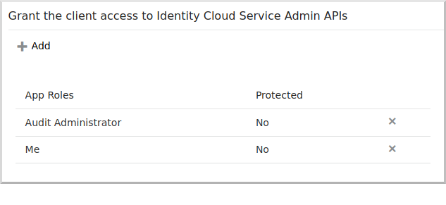

Authenticate Micronaut Application users with OpenID Connect and Oracle IDCS
Learn how to create a secured Micronaut application and authenticate with OpenID Connect in Oracle Cloud.
Authors: Burt Beckwith
Micronaut Version: 3.9.2
1. Getting Started
In this guide, we will create a Micronaut application written in Kotlin.
The application will use OpenID Connect (OIDC), which is an identity layer on top of the OAuth 2.0 protocol that verifies the end user’s identity and obtains basic profile information. Under the hood, the OIDC APIs are easier to work with than OAuth because they use JSON instead of XML, but in practice, Micronaut Security handles the details for you.
2. What you will need
To complete this guide, you will need the following:
-
Some time on your hands
-
A decent text editor or IDE
-
JDK 1.8 or greater installed with
JAVA_HOMEconfigured appropriately
-
Oracle Cloud CLI installed with local access to Oracle Cloud configured by running
oci setup config
-
An Oracle Cloud account (create a free trial account at signup.oraclecloud.com)
3. Solution
We recommend that you follow the instructions in the next sections and create the application step by step. However, you can go right to the completed example.
-
Download and unzip the source
4. Configure OpenID Connect at Oracle Cloud
We’ll use the Oracle Cloud web console to create an OAuth 2.0 "Confidential Application" with support for OpenID Connect and a federated user to demonstrate using OpenID Connect with Micronaut and Oracle Cloud.
4.1. Create a federated user
Log in to your Oracle Cloud tenancy as an admin (or a user with sufficient permissions to create users and applications), and from the Oracle Cloud Menu, select "Identity & Security" and then "Federation":
Click on the link for "OracleIdentityCloudService":

and then click the "Create User" button:

Enter a valid username, e.g., "mn_guide_oidc", and a valid email address, along with a first and last name, then click "Create":

Open the email sent to the email address you specified and click the link to set the password for the user:

Log in as the user to verify the password, then log out and back in as the admin user.
4.2. Create the OAuth application
Navigate again to the "OracleIdentityCloudService" federation and copy the link to the "Oracle Identity Cloud Service Console", minus the path (it will look like https://idcs-7084de14ec…….identity.oraclecloud.com/).
Save this for later when we create a Micronaut application where this value will be used as the OAUTH_ISSUER.
Click the "Oracle Identity Cloud Service Console" link to open the console:

Click the button in the top right of the "Applications and Services" section to create a new application:

and then click "Confidential Application":

Enter a valid application name, e.g., "mn_guide_oidc_app" and optionally a description:

Click "Next" to go to step 2.
Click "Configure this application as a client now", and in the Allowed Grant Types section, check Authorization Code.
Check Allow non-HTTPS URLs for now to make testing easier and avoid having to use HTTPS locally.
Be sure to unselect this in production applications, which should always use HTTPS.
Enter the following:
-
Redirect URL:
http://localhost:8080/oauth/callback/micronaut -
Logout URL:
http://localhost:8080/logout -
Post Logout Redirect URL:
http://localhost:8080/

Scroll down and click the "Add" button in the "Grant the client access to Identity Cloud Service Admin APIs" section:

Select Me:

Click "Next", and click "Next" to accept the defaults for steps 3, 4, and 5, then click "Finish"

Save the "Client ID" and "Client Secret" values for later, then click "Close":

Finally, click the "Activate" button to make the application available for use:

4.3. Enable Signing Certificate Access
We need to make the signing certificate available to our Micronaut application for JWT validation without being authenticated.
Click the  ("burger" menu) in the top left, then click "Settings", and then "Default Settings":
("burger" menu) in the top left, then click "Settings", and then "Default Settings":

and enable unauthenticated access to the signing certificate:

|
If you skip this step, you will see errors similar these for valid logins because Micronaut Security cannot retrieve the JWK to validate the JWT: |
5. Writing the Application
Create an application using the Micronaut Command Line Interface or with Micronaut Launch.
mn create-app example.micronaut.micronautguide \
--features=security-oauth2,security-jwt,security-session,views-thymeleaf \
--build=gradle
--lang=kotlin
If you don’t specify the --build argument, Gradle is used as the build tool. If you don’t specify the --lang argument, Java is used as the language.
|
The previous command creates a Micronaut application with the default package example.micronaut in a directory named micronautguide.
If you use Micronaut Launch, select Micronaut Application as application type and add security-oauth2, security-jwt, security-session, and views-thymeleaf features.
| If you have an existing Micronaut application and want to add the functionality described here, you can view the dependency and configuration changes from the specified features and apply those changes to your application. |
5.1. Configuration
Replace the generated application.yml with this:
src/main/resources/application.yml
micronaut:
application:
name: micronautguide
security:
authentication: idtoken (1)
oauth2:
clients:
micronaut: (2)
client-id: ${OAUTH_CLIENT_ID:xxx} (3)
client-secret: ${OAUTH_CLIENT_SECRET:yyy} (3)
openid:
issuer: ${OAUTH_ISSUER:zzz} (3)
endpoints:
logout:
enabled: true
get-allowed: true (4)
netty:
default:
allocator:
max-order: 3| 1 | Set micronaut.security.authentication as idtoken. The idtoken provided by your OAuth 2.0 application when the Authorization code flow ends (a signed JWT) will be saved in a cookie. |
| 2 | The provider identifier must match the last part of the URL you entered as a redirect URL: /oauth/callback/micronaut. |
| 3 | client-id, client-secret, and the issuer URL will be set as environment variables |
| 4 | Accept GET requests to the /logout endpoint |
5.2. Home controller
Create a HomeController class to test the security configuration:
src/main/kotlin/example/micronaut/HomeController.kt
package example.micronaut
import io.micronaut.http.annotation.Controller
import io.micronaut.http.annotation.Get
import io.micronaut.security.annotation.Secured
import io.micronaut.security.rules.SecurityRule.IS_ANONYMOUS
import io.micronaut.security.rules.SecurityRule.IS_AUTHENTICATED
import io.micronaut.views.View
@Controller (1)
class HomeController {
@Secured(IS_ANONYMOUS) (2)
@View("home") (3)
@Get (4)
fun index(): Map<String, Any> = mapOf()
@Secured(IS_AUTHENTICATED) (5)
@Get("/secure") (6)
fun secured(): Map<String, Any> = mapOf("secured" to true) (7)
}| 1 | The class is defined as a controller with the @Controller annotation mapped to the path /. |
| 2 | Annotate with io.micronaut.security.Secured to configure secured access. The SecurityRule.IS_ANONYMOUS expression will allow access without authentication. |
| 3 | Use View annotation to specify which template to use to render the response. |
| 4 | The @Get annotation maps the index method to an HTTP GET request on /. |
| 5 | Annotate with io.micronaut.security.Secured to configure secured access. The SecurityRule.IS_AUTHENTICATED expression allows only access to authenticated users. |
| 6 | The @Get annotation maps the secured method to an HTTP GET request on /secure. |
| 7 | This method simply returns a model map that will be rendered as JSON since there’s no @View annotation |
5.3. Thymeleaf view
Create a Thymeleaf view to render the UI for the controller:
src/main/resources/views/home.html
<!DOCTYPE html>
<html xmlns:th="http://www.thymeleaf.org" lang="en">
<head>
<title>Micronaut - OpenID Connect</title>
</head>
<body>
<h1>Micronaut - OpenID Connect</h1>
<h2 th:if="${security}">Username: <span th:text="${security.get('name')}"></span></h2>
<h2 th:unless="${security}">Username: Anonymous</h2>
<nav>
<ul>
<li th:unless="${security}"><a href="/oauth/login/micronaut">Enter</a></li>
<li th:if="${security}"><a href="/logout">Logout</a></li>
</ul>
</nav>
<div th:if="${security}">
<h2>User Information:</h2>
<ul>
<tr th:each="key : ${#lists.sort(#lists.toList(security.attributes.keySet()))}">
<li><span th:text="${key}"></span>: <span th:text="${security.attributes.get(key)}"></span></li>
</tr>
</ul>
</div>
</body>
</html>Note that we return an empty model in the controller index() method. However, we are accessing security in the Thymeleaf template.
The Micronaut Security SecurityViewModelProcessor
injects a security map into the model with the authenticated user data.
See the User in a view documentation.
6. Running the Application
Before starting the application, we need to create some environment variables.
We used placeholders in application.yml for the client-id, client-secret, and the issuer URL properties, so we need to create OAUTH_CLIENT_ID, OAUTH_CLIENT_SECRET, and OAUTH_ISSUER environment variables.
Use the client ID and client secret you saved when you created the Oracle Cloud application, and the issuer URL you saved (the root of the Oracle Identity Cloud Service (OICS) console URL):
export OAUTH_CLIENT_ID=XXXXXXXXXX
export OAUTH_CLIENT_SECRET=YYYYYYYYYY
export OAUTH_ISSUER=https://idcs-7084de14ec.......identity.oraclecloud.com/|
We use Linux/Mac syntax for environment variables. If you use Windows, change 'export' to 'set' if using the
and if using PowerShell, change 'export ' to '$' and use quotes around the value, for example:
To dereference a value in Linux/Mac or Powershell, use $, for example:
and if using
|
To run the application, use the ./gradlew run command, which starts the application on port 8080.
Open http://localhost:8080/secure in a browser, and you’ll be redirected to the home page because the controller method is annotated with @Secured(IS_AUTHENTICATED), and you’re not yet authenticated:

Sign in with the username and password for the federated user you created:

then click Allow on the next screen:

After you’re redirected to the home page, you’ll see that you’re authenticated and now have a Logout link, and several authentication details are displayed:

Navigate again to http://localhost:8080/secure in a browser, and you’ll see a simple JSON response:

7. Next steps
Explore more features with Micronaut Guides.
Learn more about Micronaut Security.
Learn more about OpenID Connect.
Check out this blog post on using OpenID Connect with Micronaut and Oracle Cloud.